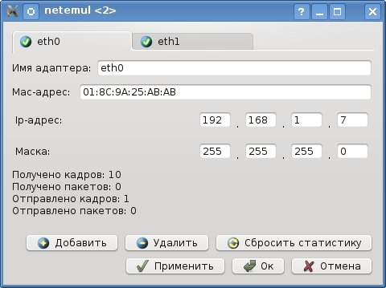

| Руководство NetEmul | ||
|---|---|---|
| Пред. | След. | |
IP-адрес — уникальный идентификатор (адрес)
устройства (обычно компьютера), подключённого к локальной сети и (или) интернету.
IP-адрес представляет собой 32-битовое (по версии IPv4) или 128-битовое (по версии IPv6) двоичное число.
В терминологии сетей TCP/IP маской подсети или маской сети называется битовая маска, определяющая,
какая часть IP-адреса узла сети относится к адресу сети, а какая — к адресу самого узла в этой сети.
Например, узел с IP-адресом 12.34.56.78 и маской подсети 255.255.255.0 находится в сети 12.34.56.0/24.
ARP (англ. Address Resolution Protocol — протокол разрешения адресов) — сетевой протокол канального уровня, предназначенный для преобразования IP-адресов (адресов сетевого уровня) в MAC-адреса (адреса канального уровня) в сетях TCP/IP.

При вводе ip-адреса, автоматически подставляется маска в зависимости от класса сети. После нажатия на кнопку "Ок" (или "Применить") можно сразу увидеть работу Arp-протокола, который проверяет, есть ли в сети компьютер с таким ip-адресом.| Пред. | Начало | След. |
| Mac-адрес | На уровень выше | Руководство пользоватля |